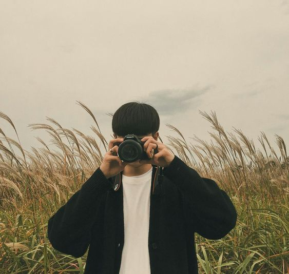
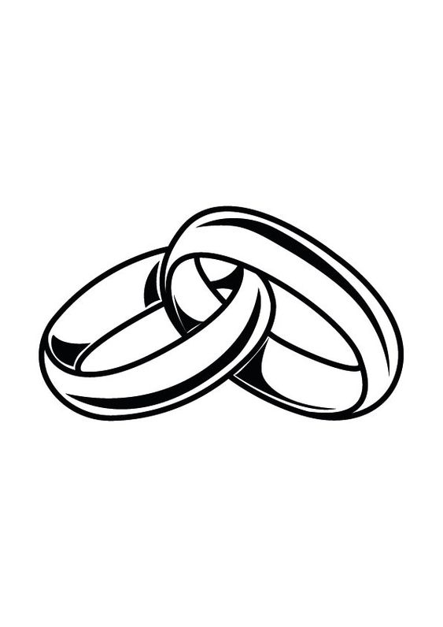

Sobre mi
Hola, mi nombre es Lautaro Navarrete, tengo 21 años, soy de Córdoba, Argentina.
Desde muy pequeño me intereso la fotografia y de a poco me fui incursionando, hace 5 años que trabajo como fotografo independiente, hago retratos, fotos de eventos, fiestas, personas y mucho mas, amo hacer fotografias ya que para mi es la forma de hacer que un recuerdo dure para siempre. Soy una persona tranquila, amante de la naturaleza y los animales.
Estudie fotografia de forma autodidacta 2 años, y al poco tiempo realice dos cursos que me ayudaron a mejorar de manera notoria.
A lo que me dedico

Bodas
Un dia unico y lleno de amor
Paisajes
La naturaleza posee belleza en todo
Mascotas
Seres fieles y bondadosos